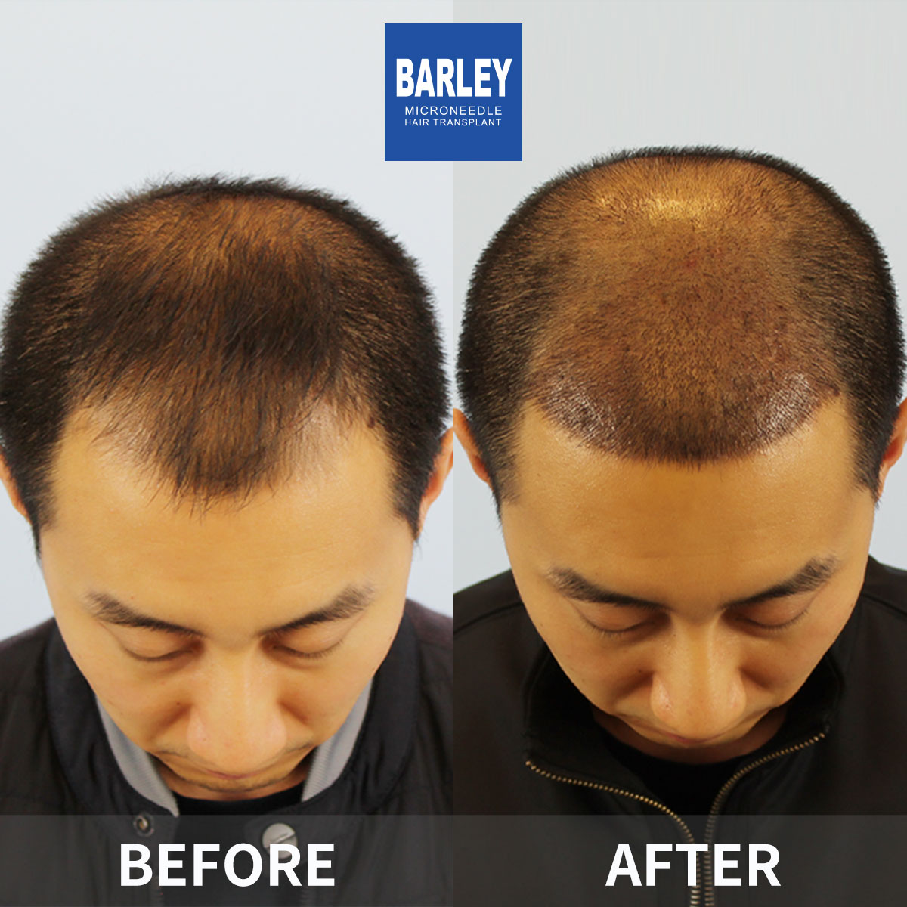

A hair thickening transplant is a specialized density-boosting procedure designed for men and women whose hair has gradually lost its fullness over the years but who have not yet developed fully bald patches. Instead of filling in completely bare areas like a standard transplant would, this technique strategically distributes healthy follicular units throughout regions where hair is still growing but has become visibly thin, thereby increasing overall volume and creating a noticeably fuller appearance.
This procedure is particularly effective for those experiencing diffuse thinning — a condition where hair progressively loses its thickness and coverage across the crown and top of the scalp. Our surgeons carefully plan each graft's position so that every new follicle blends seamlessly with your remaining hair, resulting in a density boost that appears entirely genuine and is impossible to distinguish from naturally thick hair. The technique demands exceptional precision because each graft must be placed between your existing hairs without damaging them.
Using our cutting-edge microneedle FUE system, we extract individual follicles from your genetically stable donor region and implant them at carefully calculated intervals throughout the thinning areas. The result is a significant increase in hair density per square centimeter, bringing back the body, volume, and richness you recall from your younger years. Most patients see a 40–60% improvement in visible density after a single session.
Gradual, wide-area thinning across the top of your scalp that becomes especially visible under strong lighting. Our density treatment rebuilds coverage and eliminates that transparent, washed-out appearance.
The crown area often becomes sparse and translucent even when your frontal hairline remains intact. We focus added density on the vertex to produce a luxuriant, full crown that restores your natural head shape.
Some people are simply born with fewer hairs per square centimeter, regardless of hair loss. We can increase your total follicle count to give you a richer, more abundant look that boosts your confidence.
If you had a hair transplant years ago and now want more fullness, we can place additional grafts between your previously transplanted hairs to substantially improve the visual density of your result.
Step 1 — Thorough Density Mapping: Using advanced imaging technology, we measure your current hair density (strands per square centimeter) at multiple points across your scalp. This data-driven approach allows us to create a precise blueprint specifying exactly where and how many grafts are needed to achieve your desired density level.
Step 2 — Strategic Graft Distribution: Our surgeons use a natural zigzag pattern to distribute new grafts evenly throughout the thinning zone. Rather than following a rigid grid layout that looks artificial, our method mimics the organic randomness of genuine hair growth — delivering the most realistic density enhancement possible.
Step 3 — Multi-Hair Graft Approach: To achieve the most impactful visual results, we combine single-follicle and multi-follicle grafts (containing 2–3 hairs each). Multi-hair grafts produce significantly more coverage per insertion point and are strategically placed in areas that need the most dramatic density improvement.
Step 4 — Exact Angle and Direction Matching: Each graft is implanted at the same angle and direction as your surrounding native hair. This ensures the transplanted strands blend perfectly with your existing growth, creating a unified appearance that is completely indistinguishable from hair that has always been thick.
Typically requires 800–1,500 grafts to raise density from 30–40 to 50–60 hairs/cm². A focused procedure targeting specific sparse zones for noticeable improvement.
Usually requires 1,500–2,500 grafts to deliver a clearly visible density increase across the upper scalp region.
May require 2,500–3,500 grafts to rebuild substantial density when advanced diffuse thinning affects both the crown and mid-scalp areas.
Generally involves 1,000–2,000 grafts to fill gaps between previously transplanted hairs, producing a visibly richer, more complete result.
Our 0.6mm micro-instruments allow us to place new grafts among your existing hairs without causing damage — a level of precision that larger tools simply cannot achieve.
We use evidence-based scalp analysis to identify exactly where your hair is thinnest and calculate the optimal graft count for each zone.
Our dedicated international patient coordinators communicate fluently in English, ensuring smooth and reassuring care throughout your entire journey from first consultation through full recovery.
Customized FUE solutions designed for thinning hair challenges

If your hair has steadily lost its thickness and body over the years, our thickening transplant can restore the lush, healthy appearance you once had. We carefully implant strong follicles throughout your thinning zones, delivering a meaningful density boost that looks completely natural and lasts a lifetime.
After a single session
Between existing strands
Gentle on your current follicles
Permanent, lasting outcomes
Your journey to fuller, more voluminous hair — broken down clearly
Measure your current hair density and identify every thinning zone
Assess available donor follicles to plan the best density outcome
Extract individual grafts using our 0.6mm microneedle FUE devices
Separate single-hair and multi-hair grafts for strategic placement
Place each graft between native hairs with exact angle matching
Comprehensive post-procedure guidance and ongoing progress tracking
What makes our density enhancement approach truly different
We never place grafts randomly. Our surgeons follow a mathematically calculated distribution strategy that maximizes visible density while using the fewest grafts necessary. This approach produces the most natural-looking volume while preserving your donor supply for potential future sessions.
By strategically positioning multi-hair grafts in the thinnest areas, we achieve a more dramatic visual change than the same number of single-hair grafts would provide. This means a fuller appearance with fewer total grafts — saving you both time and money.
Our ultra-fine 0.6mm microneedle instruments are engineered to pass between your current hairs without touching or injuring them. This is especially critical for thickening work where the goal is to increase density while preserving every single strand of native hair you still have.
A globally recognized leader trusted by patients worldwide
Pioneering microneedle transplant technology since 2006
Located in major cities across China, each maintaining the same high clinical standards
Proprietary microneedle and implant pen systems delivering consistently outstanding results
Chosen by international patients for reliable, stunning transformations
Full English-language assistance for international patients from first inquiry through complete recovery
State-of-the-art facilities with strict clinical protocols ensuring your total peace of mind
See the remarkable density improvements our patients have achieved


Memorable moments captured with our satisfied patients

Photo with our clinical team after a successful procedure

Celebrating fantastic results alongside our surgeons

Another delighted patient sharing their joy

Patient with our specialist before heading home

Thrilled patient with Dr. Chen after treatment

Excited patient showing off their new look

Patient overjoyed with their results

Patient starting fresh with remarkable outcomes
Genuine stories from people who chose Barley for their density restoration journey
Whenever I stood under the fluorescent lights at work, everyone could see my scalp right through my hair — it was deeply embarrassing. After 2,100 grafts were placed across my crown and mid-scalp, my hair finally reached a thickness where I no longer worry about bright lighting. The difference has been truly incredible.
I had a transplant done in Turkey five years ago, but the outcome never reached the fullness I was hoping for. Barley added 1,500 extra grafts among my original ones, and now the density is exactly what I had imagined from the beginning. Their zigzag placement technique is remarkable — it replicates completely natural hair growth patterns.
As a woman facing diffuse thinning, the thought of surgery intimidated me. Dr. Chen was extraordinarily gentle and understanding at every step. She placed 1,200 grafts using the ultra-fine needles, and my part line has narrowed back to where it used to be. My hairdresser didn't even realize I'd had anything done — she just said my hair looked healthier!
The pre-procedure density analysis was impressively thorough — they measured my hairs per square centimeter and marked every weak spot on a detailed scalp map. After 1,800 grafts, my density rose from 35 to 55 hairs/cm². Eight months post-surgery, my hair has genuine body again for the first time in well over a decade.
My hair was always naturally thin, and getting older only made it worse. The multi-hair grafts were a total game-changer — each graft delivers two to three strands of coverage. After receiving 2,000 grafts, my hair genuinely looks thick now. I healed in just three days and was back at work by Monday.
The most impressive thing for me was watching them place all 1,700 grafts between my existing hairs without damaging a single native follicle. The 0.6mm microneedle is incredibly precise. My density increased by roughly 50%, and the entire procedure cost less than half of what a clinic in Sydney quoted me for the same treatment.
Take a look at our modern and welcoming facilities

Our advanced medical facility

Relax in our premium waiting lounge

Sterile and technologically equipped

Private and professional setting

Comfortable post-treatment space

Warm and friendly entrance
Answers to the questions we hear most often
Get in touch today for a free, no-obligation consultation
15810155700
+86 13730143529
hairtransplant@qq.com